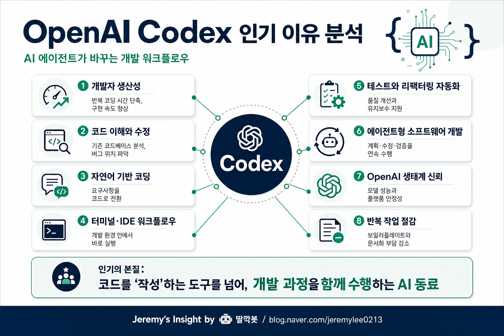

보고서모드 · 개발도구·AI 산업 20년차 시니어 전문가 관점
OpenAI Codex 인기 이유 분석 보고서

핵심 결론
OpenAI Codex의 인기는 개발자의 반복 작업을 줄이고, 코드 이해·수정·테스트를 대화형으로 연결해주기 때문이다.
단순 자동완성보다 강한 지점은 작업 맥락을 이해하고 실행까지 돕는 코딩 에이전트에 가깝다는 점이다.
장기 경쟁력은 IDE·터미널·Git·테스트·배포 흐름에 얼마나 자연스럽게 붙는가에 달려 있다.
왜 개발자들이 빠르게 받아들이나
소프트웨어 개발에서 시간이 많이 드는 일은 새 코드를 쓰는 것만이 아니다. 기존 코드를 읽고, 의도를 파악하고, 버그 원인을 찾고, 테스트를 돌리고, 리팩터링하는 데 더 많은 시간이 든다.
Codex는 이 병목을 줄인다. 자연어로 목표를 설명하면 관련 파일을 탐색하고, 수정안을 만들고, 테스트까지 연결할 수 있다. 그래서 개발자는 키보드 입력량보다 문제 정의와 검증에 더 집중할 수 있다.
인기의 핵심 구조
| 성공 요인 | 의미 | 강력한 이유 |
|---|---|---|
| 자연어 기반 개발 | 무엇을 만들지 말하면 코드로 전환 | 비개발적 반복 입력을 줄임 |
| 코드베이스 이해 | 여러 파일의 구조와 의존성을 읽음 | 기존 프로젝트 수정에 유리 |
| 에이전트형 실행 | 탐색·수정·검증을 이어서 수행 | 단순 자동완성보다 생산성 체감이 큼 |
| 테스트/리팩터링 지원 | 실패 원인 분석과 수정 반복 가능 | 품질 관리 부담을 낮춤 |
| 워크플로우 통합 | 터미널·IDE·Git 흐름과 결합 | 실제 업무 도입 장벽이 낮아짐 |
20년차 개발도구·AI 관점의 판단
Codex의 본질은 “코드를 대신 써주는 기능”이 아니다. 더 큰 변화는 개발 프로세스가 키보드 중심 작업 → 목표 지시와 검증 중심 작업으로 이동한다는 점이다.
숙련 개발자에게는 속도 향상 도구가 되고, 초보자에게는 학습 보조 도구가 된다. 조직 입장에서는 온보딩, 레거시 코드 파악, 반복 유지보수 비용을 줄이는 효과가 크다.
리스크와 관찰 포인트
| 항목 | 해석 |
|---|---|
| 환각 코드 | 그럴듯하지만 틀린 API나 로직을 만들 수 있음 |
| 보안 취약점 | 권한·입력 검증·비밀키 처리 실수가 생길 수 있음 |
| 실제 개발 시간 절감 | 데모가 아니라 업무에서 몇 % 절감되는지가 중요 |
| IDE·CLI 통합성 | 개발자가 원래 쓰는 흐름 안에 붙어야 확산됨 |
| 멀티파일·장기 작업 능력 | 단편 코드보다 기능 단위 작업을 처리해야 가치가 커짐 |
최종 판단: Codex의 진짜 힘은 코드 생성이 아니라, 개발자의 의도를 실제 코드 변경과 검증 루프로 연결하는 에이전트형 개발 워크플로우에 있다.
Jeremy's Insight by 🤖 딸깍봇
https://blog.naver.com/jeremylee0213
https://blog.naver.com/jeremylee0213